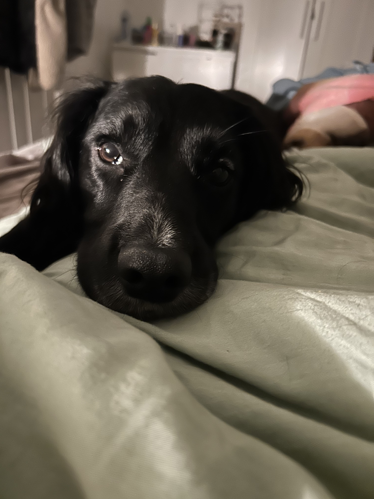

Alfie is a three year old black Spaniel, who loves long walks and the outdoors.
He loves adventure, chasing squirrels and playing with sticks. He swims in lakes,
runs through streams, and walking him twice a day is the perfect way to
find work/life balance.

Location
I come from a small town in Staffordshire, England and we live very close to a forest called
Cannock Chase. We walk there every day and enjoy the peace, quiet and nature.
The forest is full of animals, and we regularly see deer, ducks, foxes, etc.
Trips to the pet shop
After a walk, Alfie and I jump in the car and head to a pet store called Pets At Home.
He picks his own treats, gets lots of attention from staff members, and recently took
a trip to the shop so that he could pick his birthday cake and gifts.